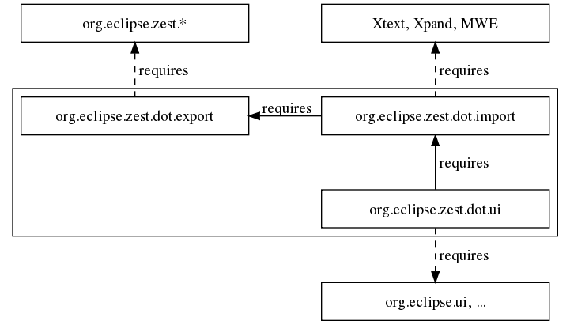
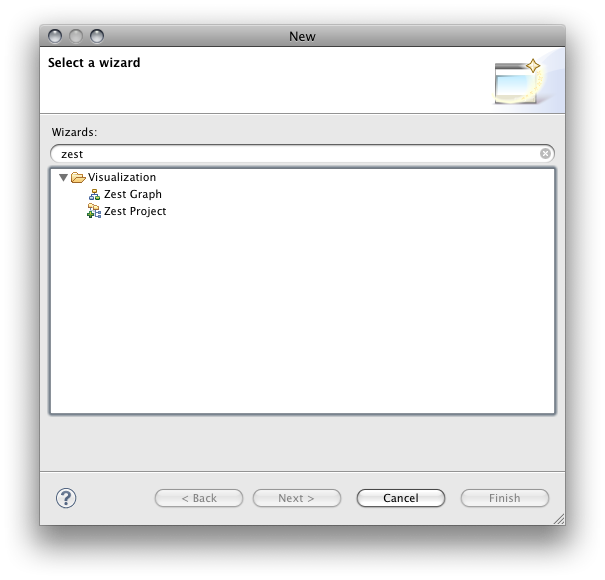
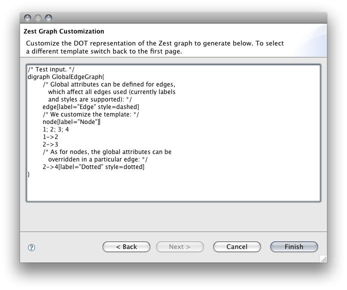

General information, documentation and resources are available at: http://wiki.eclipse.org/Graphviz_DOT_as_a_DSL_for_Zest
Requirements: Eclipse 3.5 and GEF Zest visualization (Galileo), org.eclipse.zest.import (dot4zest)

This bundle defines New-Wizards for Zest Graphs and Zest Projects under a category labeled 'Visualization':

It also adds a Zest Graph view (see documentation at http://wiki.eclipse.org/Graphviz_DOT_as_a_DSL_for_Zest):
Graphviz DOT as a DSL for Zest - M4: Zest project type with Graphviz support (Bug 277400)
Milestone 4 adds a Zest project nature, builder, and wizard. The project created by the wizard contains a 'templates' folder containing a sample DOT file. The DOT files in the 'templates' folder are compiled to Zest graph subclasses by the builder, which can be launched as Java applications to view the Zest Graph:

Effectively this implements a basic Zest authoring environment using DOT as a DSL, as upon saving the DOT file, the same Zest application can be relaunched, showing the Zest graph created from the changed DOT file.
Graphviz DOT as a DSL for Zest - M3: Zest wizard for Graphviz import (Bug 277399)
Milestone 3 adds a New-Wizard called 'Zest Graph' under a category labeled 'Visualization'. In the first page the container and a graph template are selected, the resulting Zest graph for the template is previewed:

In the second page the DOT representation of the selected template can be customized:

After the wizard finishes, it tries to run the generated Zest Graph to display the result (here customized in the second page):

To have the generated file launch immediately, setup a project that has all Zest bundles (including org.eclipse.zest.dot.export) on the classpath and create the graph in the "org.eclipse.zest.dot" package (M4 provides a wizard for a fully configured Zest project, see above and the dot4zest wiki page).